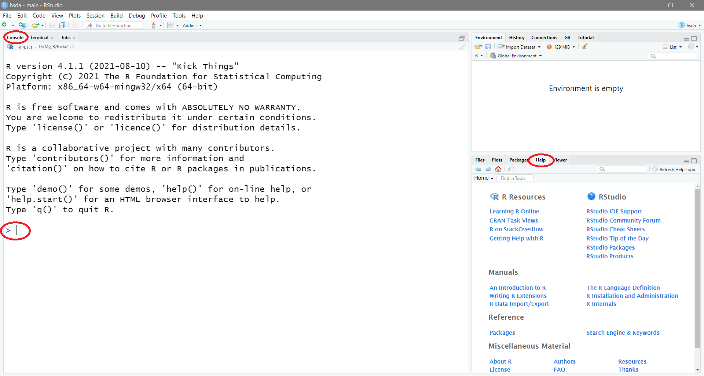
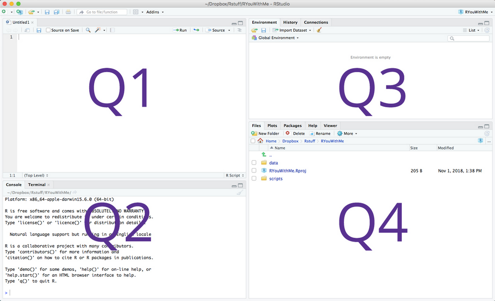
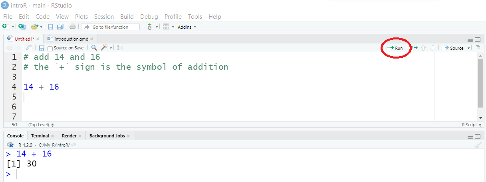
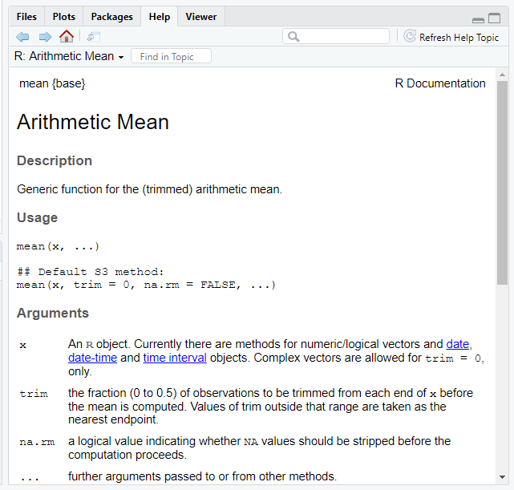
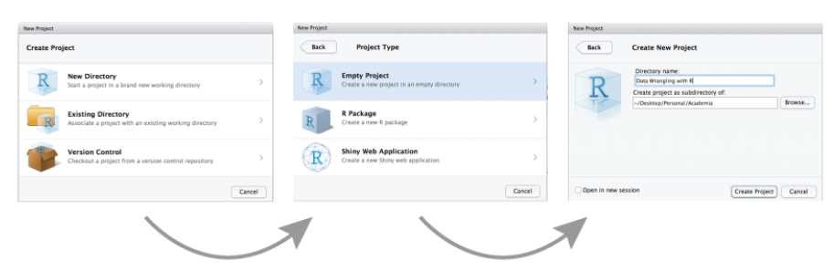
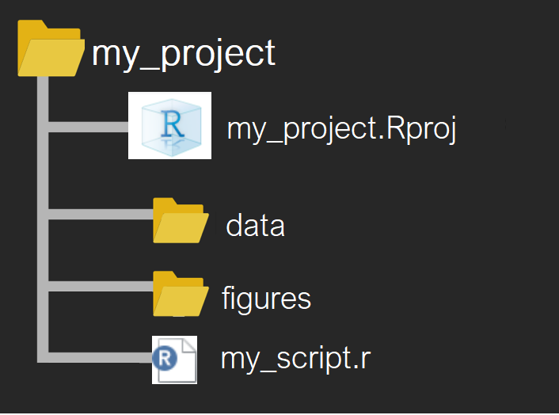

14 + 16[1] 30When we have finished this Chapter, we should be able to:
R is an open-source free statistical programming language (an implementation of the S programming language) and a powerful graphics engine, which was created by Ross Ihahka and Robert Gentleman at the University of Auckland in 1993.
RStudio is an integrated development environment (IDE) that was founded by J.J. Allaire in 2009. Today, RStudio is an open source Posit product that provides a friendly interface by adding a plenty of great features, auto-complete functions and a set of tools.
Throughout this textbook we will use R via RStudio IDE. Both programs can be downloaded from  posit.
posit.
After the RStudio installation is finished, click the RStudio icon 
R starts automatically when we open RStudio Figure 1.1 and we are greeted by three panes:

The three main panes that divide the screen are:
the large Console pane on the left runs R code.
the workspace pane, which includes among others the Environment and History tabs, in the upper right.
The Environment tab keeps track of the objects we create as we work with R (a major part of our tasks involves creating objects).
The History tab tracks all of the commands that we have sent to the R console in the session.
the Files/Plots/Packages/Help/Viewer/Presentation pane in the lower right.
The Files tab lets us create new folders (directories) on our computer, as well as copy, move, delete, or rename files.
The Plots tab display static graphs which are generated from our data and during the analysis. There are backwards and forwards arrows for navigating between older and newer plots that have been displayed. The broom icon which will clear ALL temporary plots from this tab
The Packages tab lists of all the R packages installed on our hard drive and indicates whether or not they are currently loaded. We’ll discuss packages in more detail in the next sections.
The Help tab, provides links to search for help directly from our RStudio window.
The Viewer tab in RStudio allows us to view local web content (e.g., html tables or interactive htmlwidgets like plotly graphs).
The Presentation tab is used to display HTML slides generated via Quarto’s revealjs format.
Throughout this textbook, we’ll come to learn what purpose each of these panes serves.
The Console pane starts with information about the version number, license and contributors, and provides some guidance on how to get help. The last line is a standard command prompt (the greater than sign > symbol) that indicates R is ready and expecting instructions to do something.
Let’s type 14 + 16 at the R command prompt and press Enter:
14 + 16[1] 30So what happened?
Well, R gave us a response (output) to our input (14 + 16). That response came after we pressed the Enter from the keyboard. It was [1] 30. It’s clear that 30 is the answer to the mathematical calculation of 14 + 16. However, what does the [1] mean? At this point we can ignore it, but technically it refers to the index of the first item on each line. (Sometimes R prints out many lines as an output. The number inside the brackets helps us figure out where in the sequence we are per line).
Usually, we do our programming by writing our code in script files. An R script (with the .R extension) is simply a text file in which our R code is stored, and then can be “sent” to the console, where R will execute it.
In the RStudio menu, we go to:
flowchart LR A[File] -.-> B(New File) -.-> C(R Script)
Another pane (Q1) is opened on the left above the interactive console Figure 1.2. This is where we can write a length script with lots of code chunks and save the file for future use.

We can change the shape of the panes by either clicking the minimize or maximize buttons on the top right of each pane, or by clicking and dragging the middle of the borders of the panes.
The four panes might be in a different order that those in Figure 1.2. If we’d like, we can change the order of the panes under RStudio preferences. We select from RStudio menu:
flowchart LR A[Tools] -.-> B(Global Options) -.-> C(Pane layout)
Now, let’s type 14 + 16 at a new R script and press the  button. The result is printed in the console (Figure 1.3):
button. The result is printed in the console (Figure 1.3):
.R script, we can execute our code line by line (by putting the cursor on the line) or selecting a chunk of lines (by highlighting the text) and pressing the 
Comments can also be used to explain R code, and to make it more readable (it can also be used to prevent execution when testing alternative code). Comments start with the hashtag symbol #. When executing the R-code, R will ignore anything that starts with # (Figure 1.3). It is considered good practice to comment our code when working in an .R script.
Let’s type the following at the R command prompt and press Enter:
helloWe get the following error:
Error: object ‘hello’ not found
R will show in the console pane that something unusual is happening in three different situations:
Errors: When something is a legitimate error, it will be prefaced with “Error:” and R will try to explain what went wrong. When there’s an error, the execution of code will stop.
Warnings: When there is a signal of a warning, it will be prefaced with “Warning:” and R will try to explain why there’s a warning. Generally our code will still work, but with some caveats.
Messages: When the signal is a message, R informs the users that some action has been performed on their behalf.
Now, let’s type the following:
1 + 2 -
+If an R command is not complete then R will show a plus sign (+) prompt on second and subsequent lines until the command syntax is correct (this means that we can type something to finish the command we are trying to execute). We can also press the escape key Esc to cancel whatever command R is waiting for us to finish.
Before asking others for help, it’s generally a good idea to try find help on our own. It is strongly recommended to learn how to use R’s useful and extensive built-in help system which is an essential part of finding solutions to our R programming problems.
We can use the help() function or ? help operator which provide access to the R documentation pages for a specific term. For example, if we want information for the mean we type the following commands:
help(mean)or
?mean
meanSo, R tried to find something called mean (Figure 1.4).
In console to recall a previously typed commands use the up arrow key (\(\uparrow\)). To go between previously typed commands use the up and down arrow (\(\downarrow\)) keys. To modify or correct a command use the left (\(\leftarrow\)) and right arrow (\(\rightarrow\)) keys.
Two question marks (??) will search R documentation for a phrase or term and it is a shortcut to help.search() function. So for example, let’s say we want to search documentation for linear regression analysis. Keep in mind if our phrase is a string, we must put it in quotation marks.
??"linear regression"To find all the names of objects1 that include the term mean we can use the apropos() command with the mean in double quotes, e.g. "mean", or single quotes, 'mean'. For example:
1 For what is an object read the Chapter 5
apropos("mean") [1] ".colMeans" ".rowMeans" "colMeans" "kmeans"
[5] "mean" "mean.Date" "mean.default" "mean.difftime"
[9] "mean.POSIXct" "mean.POSIXlt" "rowMeans" "weighted.mean"Use the example() command to run the examples at the end of the help for a function:
example(mean)
mean> x <- c(0:10, 50)
mean> xm <- mean(x)
mean> c(xm, mean(x, trim = 0.10))
[1] 8.75 5.50RStudio also provides search box in the “Help” tab to make our life easier (Figure 1.1).
Like Google, but for R is the RSeek.Org. This is not included in R but is a great search engine built specifically for R-related queries.
Additionally, there are a lot of on-line resources that can help (e.g., R-bloggers, stackoverflow). However, we must understand that blindly copying/pasting code could be harmful and further it won’t help our programming skills.
When we are working in R, the program needs to know where to find inputs and deliver outputs, and it will look first in what is called a “working directory”. Moreover, we want to organize all of the files for a given project in one folder, and that particular folder should be established as our working directory.
It is recommended to work with RStudio Projects. This enables to organize our files and switch between different projects without getting the data, scripts, or output files all mixed up. Everything gets read in or saved to the right folder/directory.
Let’s create one to use for the rest of this textbook. From the RStudio menu:
flowchart LR A[File] -.-> B(New Project)
The directory name we choose here will be the project name. We call it whatever we want (e.g., introR).

We must think carefully in which sub-directory we will create the RStudio project. If we don’t store it somewhere sensible, it will be hard to find it in the future!
RStudio Project folder structure
The files in our computer are organised into folders. RStudio Project folder can be viewed or moved around the same way we normally work with files and folders on our computer.
For our purpose, it is sufficient to consider a simple RStudio Project folder that contains the following subfolders2 (Figure 1.6).:
2 We can create new folders using the 
.csv, .xlsx, .txt, etc.